Genere Polyphaga
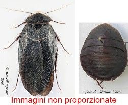
Genere Heterogamodes
Heterogamodes ursina (Burmeister, 1838)

| 1 | Margine ventrale dei femori mediani e posteriori senza una fila di spine; clipeo e fronte separati da una sutura; femmina largamente ovale e attera, maschio macrottero | FamigliaPolyphagidae | 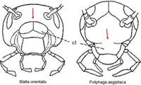
|
| - | Margine ventrale dei femori mediani e posteriori con una fila di spine; clipeo e fronte non separati da una sutura | 2 |
immagini di esempio |
| 2 | Placca sottogenitale maschile sempre simmetrica con 2 stili; femmina provvista di valve | Famiglia Blattidae |
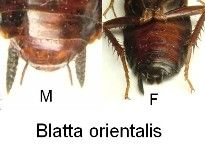
|
| - | Placca sottogenitale maschile simmetrica priva di stili oppure asimmetrica con uno o due stili; femmina sprovvista di valve | FamigliaBlattellidae | immagini di esempio |
| 1 | Femori con spine apicali (1 specie) Genere Polyphaga |
Polyphaga aegyptiaca (Linnaeus, 1758) | 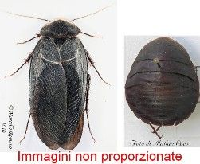
|
| - | Femori senza spine apicali (1 specie) Genere Heterogamodes |
Heterogamodes ursina (Burmeister, 1838) |
|
| 1 | Specie con adulti di colore scuro. Arolio ridotto; maschio microttero o brachittero, le ali non coprono mai l’intero addome. Femmina squamittera (1 specie) Genere Blatta |
Blatta orientalis Linnaeus, 1758 |
 |
| - | Specie più chiara. Arolio ben sviluppato ed evidente. Maschio e femmina macrotteri (2 specie) Genere Periplaneta |
2 |
 |
| 2 | Pronoto ornato da un disegno giallastro ben marcato; margine delle tegmine con una fascia giallastra | [Periplaneta australasiae(Fabricius 1775)]* | 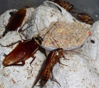
|
| - | Pronoto senza un disegno netto; tegmine unicolori | Periplaneta americana(Linnaeus, 1758) | 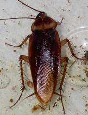
|
| 1 | Unghie simmetriche; placca sottogenitale del maschio simmetrica, se asimmetrica è provvista di 2 stili | 2 |
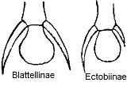
|
| - | Unghie dei tarsi asimmetriche; placca sottogenitale del maschio con uno stilo | 4 |
 |
| 2 | Maschio e femmina apparentemente atteri, in realtà squamitteri; insetti scuri, orlati di bianco dal pronoto fino all’apice dell’addome (1 specie) Genere Loboptera |
Loboptera decipiens (Germar, 1817) |
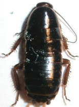
|
| - | Maschi e femmine macrotteri o brachitteri; insetti color paglierino | 3 |
|
| 3 | Maschio e femmina macrotteri; pronoto con due macchie scure longitudinali; lamina sottogenitale del maschio con un solo grande stilo asimmetrico (1 specie) Genere Blattella |
Blattella germanica(Linnaeus, 1767) |  |
| - | Femmine leggermente brachittere; pronoto senza macchie nerastre; lamina sottogenitale del maschio con due stili diseguali (1 specie) Genere Supella |
Supella longipalpa(Fabricius, 1798) |  |
| 4 | Tegmine con venatura evidente, quella anale ben sviluppata ed impressa; se le femmine sono brachittere, le tegmine hanno venatura evidente Genere Ectobius |
5 |
 |
| - | Tegmine con venatura meno evidente, con venatura anale non impressa, spesso debolmente sviluppata o indistinta; se le femmine sono brachittere non hanno venature evidenti Genere Phyllodromica |
6 |
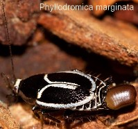
|
| 5 | Maschio con fossetta ghiandolare sub-circolare; femmina brachittera con apice delle tegmine troncato trasversalmente; specie di piccole dimensioni (1 specie) Sottogenere Capraiellus |
Ectobius (Capraiellus) tamaninii Galvagni 1972 |
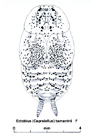
|
| - | Maschio con fossetta ghiandolare diversamente conformata; se la femmina è brachittera l’apice delle tegmine non è mai troncato trasversalmente (29 specie) | Ectobius s. str. |  |
| 6 | Tegmine rudimentali nei due sessi, ridotte a due lobi laterali; (1 specie) Sottogenere Lobolampra |
Phyllodromica (Lobolampra) subaptera (Rambur, 1838) |
 |
| - | Tegmine raggiungenti almeno la metà dell’addome | 7 |
|
| 7 | Corpo ovoidale; tegmine corte, raggiungenti circa la metà dell’addome, troncate e leggermente rientranti alla loro estremità; specie attera nei due sessi, caratterizzata da tre bande scure longitudinali (1 specie) Sottogenere Luridiblatta |
Phyllodromica (Luridiblatta) trivittata (Serville, 1838) |
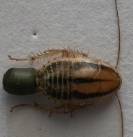
|
| - | Almeno il maschio alato; le femmine sono alate o brachittere (7 specie) | Phyllodromica s. str. |
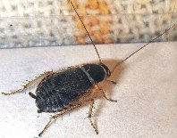
|